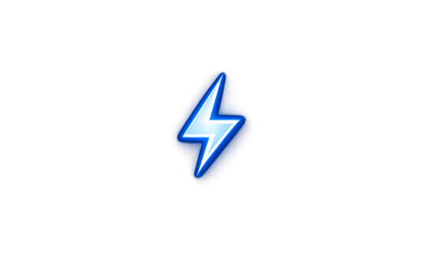
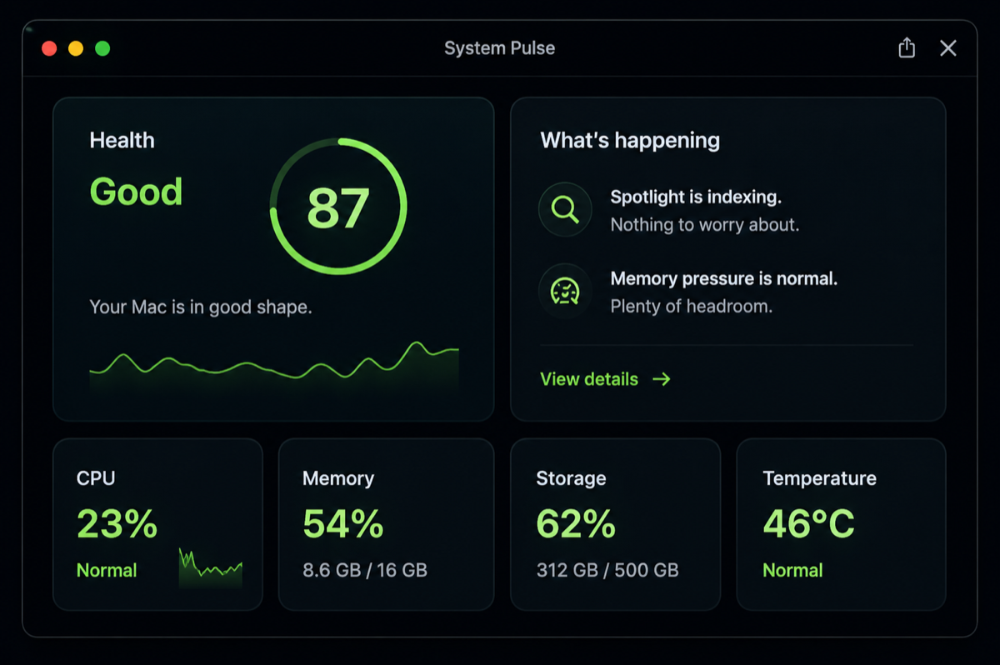
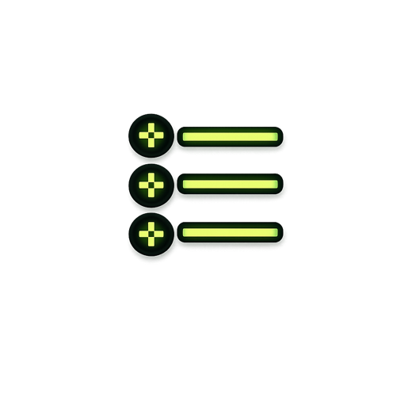
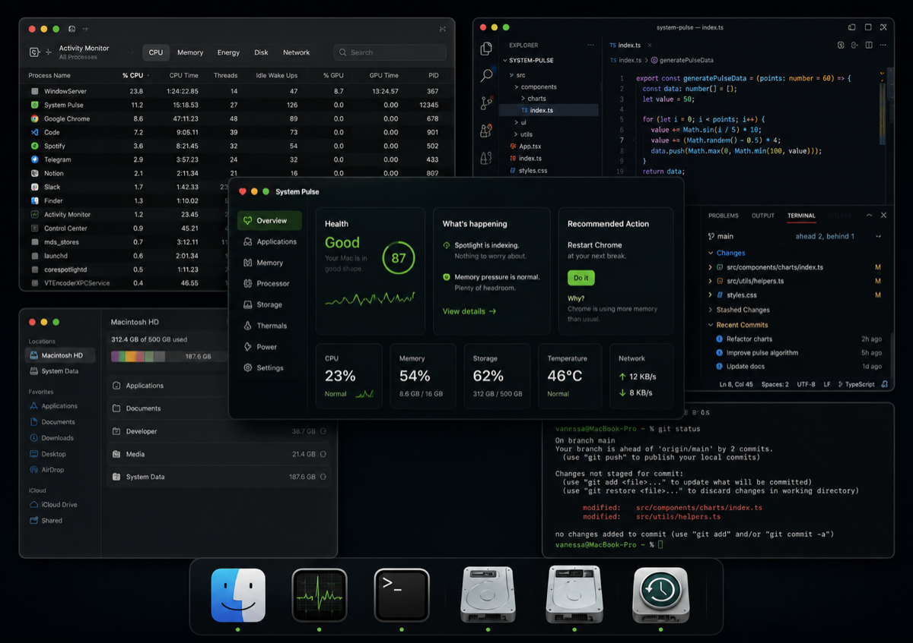
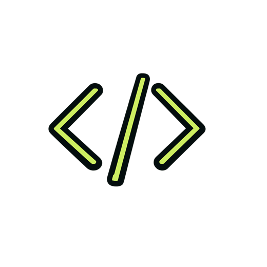
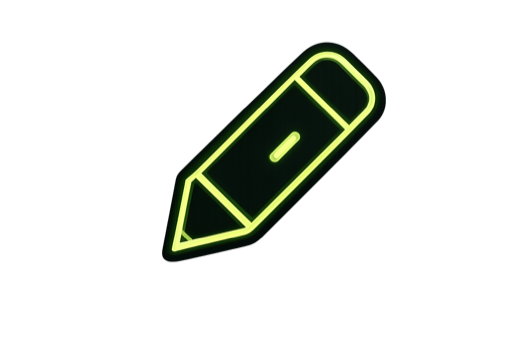
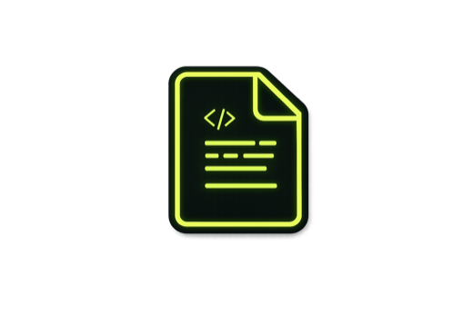
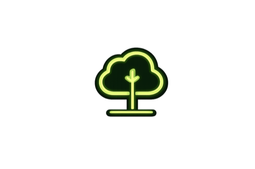

Know
See your Mac's health in one glance.
Health
Good
87
Mac companion for creative flow
System Pulse quietly watches your Mac and tells you exactly what matters before your computer starts getting in your way.
macOS 11+
Apple Silicon and Intel
See your Mac's health in one glance.
Plain English instead of Activity Monitor.

One click fixes. No technical knowledge required.

We monitor what matters in real time.
We translate complex data into plain English.

We focus on what impacts your Mac.
You stay focused. We help your Mac keep running smoothly.
Too many tools. Too much noise.

One calm view. Clear answers.

Stay in flow while your Mac compiles.

Preview, render and ship on time.
Every second counts. Keep your edge.

Distraction-free. Always.
Focus longer. Stress less.
Work smarter. Not harder.
Memory pressure exceeds critical level...
Instead: Memory is getting tight. Finish what you're doing first.mdworker_shared CPU usage high...
Instead: Spotlight is indexing. Nothing to worry about.Swap usage 1.62 GB of 4.00 GB...
Instead: Your Mac is working hard. Let's keep it comfortable.Everything happens locally on your Mac. No account. No cloud. No telemetry. No tracking. Ever.

No CloudRoadmap
Developer ID signing and Apple notarization are the remaining step before the public DMG becomes the main website download.
Changelog
Focus-first dashboard, calm menu view, local resource intelligence, and a download path ready for the certified release.